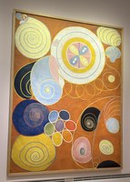

I just visited Paris. The city seemed to be in particularly radiant shape this time.
• It got me thinking about how many of the nicest built environments in the world standardize materials rather than form. Jerusalem’s stone regulation makes it much prettier than Tel Aviv. Similarly, rules in the Charleston, the Cotswolds, and Sea Ranch leave a lot of flexibility in shape, but tightly restrict materials in a way that yields cohesion. In Paris’s case, there are of course also some rules around form, but the consistency of the limestone (and zinc) is very pleasant.
• I hadn’t before internalized that central Paris is unique for the fraction of its building stock that is traditional. There are of course some modern buildings, such as Centre Pompidou and the new facade at La Samaritaine, but they are rare and typically dramatic. Most pleasant old cities (such as London) contain more of a mixture.
• Relatedly, is Haussmannian Paris the finest example of the central planning that Scott decries? “By 1870 one-fifth of the streets in central Paris were his creation.” And is the late 19th century the last time you could have done this well, immediately before the corruptions of modernism? I guess Chicago was later, but Paris certainly comes close.
• From a book I picked up: In a letter of 1886 to the Ministry of Public Works, Charles Garnier, architect of the neo-Baroque Paris Opéra, wrote, “The Metropolitan Railroad, in the eyes of most Parisians, will only be excused if it rejects absolutely all industrial character so as to be completely a work of art. Paris must not be made into a factory, it must stay a museum.” Are there elites anywhere in the world today who would reject something in the physical world unless it was a work of art? One artist recently commented to me that late 19th century France had the most educated visual culture among its elites in human history. This observation struck me a few times as I traveled around.
• I am curious what those who defend modern architecture say about central Paris. Do they think that one could in principle have a place built of modern architecture that people would find as attractive and that would bring joy to so many? Do they think that such a place exists in actuality today? If not, why not? Or is the goal of having somewhere pretty and attractive in their eyes itself ignoble and saccharine? To me Paris feels like a challenge of the whole project.
• Walking past the Louvre at night, I was struck by its austerity and severity. It made me reflect on how Parisians in 1700 might have felt as they took it in, and the subjugation that has been associated with social structures of prior eras. (Maybe this is on my mind partly as a result of reading Charles Taylor.) It made me wonder if I should be slightly more sympathetic to modernism for embodying a sense of individual freedom and joy. The Hilma af Klint exhibition at the Grand Palais was quite a contrast.
• Perhaps heretical, but Notre Dame is just not especially impressive as a cathedral, especially inside, though the restoration seems to have been excellently done, and is a terrific achievement. Overall, Lincoln cathedral (say) is much more attractive in my view. Maybe I need to read Hugo to appreciate it better. (Hugo apparently was responsible for much of the resurgence of interest in Gothic architecture. A good example, I guess, of art driving life.)
• The Renoir exhibition at the Musée d’Orsay was interesting for its emphasis on egalitarian and open relations between men and women, not something observed everywhere in the world at the time. “At the same time delicate and modest – neither moralising nor Dionysian.” I thought of @_alice_evans and her work.
• There are now so many bikes in Paris. It means you have to pay very active attention as a pedestrian, but is overall a big improvement. Rue de Rivoli is now dominated by the pleasant whirr of bicycles. I mostly got around this way.
• The Musée Quai Branly is very interesting – it’s the best tour of the world in a single compressed space that I know of. Most of the works are not impressive as such, but the concentrated breadth is great. The Ethiopian illustrated Gospels were very charming.
• Maybe my imagination, but there seemed to me to be a third fewer brasseries than on prior trips. Overall, the food was good, but not better than what you get at good restaurants in the US. The median in Paris is definitely still better, though.
• The Matisse exhibition at the Grand Palais was pleasant. It mostly reminded me of the observation that it is difficult to rank artists but easy to rank the work of a given artist. The Blue Nudes and The Sheaf are just very obviously among Matisse’s best work.
• The Michelangelo x Rodin exhibition at the Louvre was excellent, most of all for making clear how direct the artistic lineage is. Given the 300 year interlude, we should probably be more optimistic about the prospects for revival of the best of the visual arts. I hadn’t before realized that Michelangelo’s career spanned 74 years. It’s easy to focus on youth and prodigious genius, but maybe enduring genius should be more central. May we all aim to be useful and productive for a large majority of a century! In this vein, David Hockney, RIP, also just cleared the 70 year career mark.
• The Louvre is quite hot; far hotter than an American museum would be. Presumably because of EU/French air conditioning laws? (26 degree regulatory minima, supposedly.)
• Overall, central Paris feels like it’s in very good shape. Things are generally quite clean and well-maintained. Not too much graffiti (though some buildings, such as the Louvre, are very overdue for power washing.) Nowhere felt unsafe. (Given that it’s been ruled continuously by socialists since 2001, one wonders why it has fared better than many coastal cities in America. The LLMs claim that it’s because much of the funding is central and because the police report centrally, not to the mayor.)
Is central Paris the greatest single artistic achievement in the world? That is what I came away wondering.
Pictured: Ethiopian gospels; Iranian qalamkari; Renoir; af Klint.

